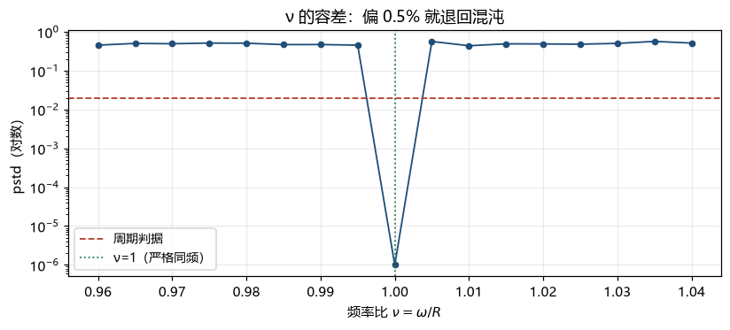
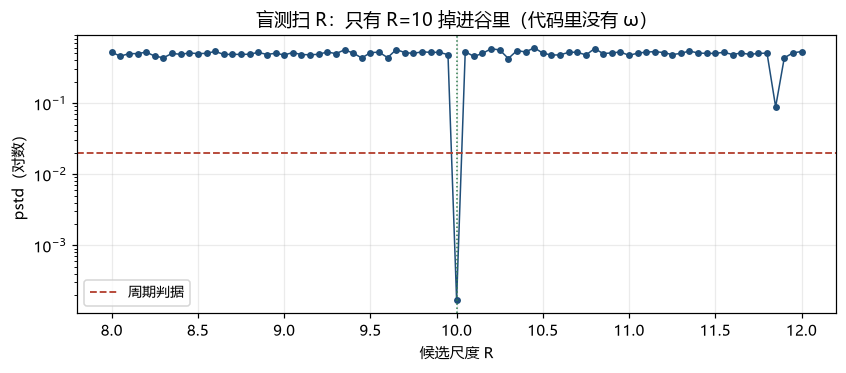

3. 变尺度：\(\nu\) 到底是什么，\(\omega\) 未知时怎么定#
这是本书的核心，也是原文最容易让人卡住的一步。
3.1 先把三个符号摆清楚#
符号 |
原文含义 |
本书代码 |
谁定的 |
|---|---|---|---|
\(\omega\) |
待测信号的真实角频率 |
不出现（盲测）或作真值对照 |
物理世界 |
\(R\)（原文也叫 \(N\)） |
变尺度系数 |
扫描变量 |
算法扫出来 |
\(\nu\) |
变尺度后信号与内驱的频率比 \(\omega/R\) |
|
由 \(R\) 与信号共同决定 |
关键一句：\(\nu\) 不是输入参数，它是 \(\omega/R\) 的别名。
3.2 原文怎么做的#
原文 2.2.1 节：设 \(t_1=Nt\)、\(\omega=N\)，则 \(a(t_1)=\gamma\cos(t_1)\)，频率从 \(N\) 压到 \(1\) rad/s。 工程上改的是数值积分步长 \(T_1=N/f_s\)。步骤 4 写得很直白：
Adjust the transformation coefficient \(R\) and observe the output state … As long as one of the phase trajectories jumps …, it means that the value of the transformation coefficient at this time is the frequency value of the characteristic signal.
所以原文的答案就是：\(\omega\) 不需要事先知道，扫 \(R\)，相变那一点的 \(R\) 就是 \(\omega\)。 \(\nu\) 是事后才被确定的量（\(\nu=\omega/R=1\)），不是事前输进去的。
3.3 为什么很多复现代码里会出现 nu=omega/R#
因为在数值上，把信号写成 \(\gamma\cos(\nu\tau+\theta)\) 与”逐点读原采样序列、把步长放大 \(R\) 倍”
是同一个方程：前者是后者的解析近似。用真值 \(\omega\) 构造 \(\nu\) 只适合”验证模式”
（已知答案、检查方法能否复现），不能用于”检测模式”——检测模式下 \(\omega\) 是未知的，
写 nu=omega/R 等于把答案先塞进输入。
本书两种模式都做，并且证明它们在无噪声下给出同一个 \(R\)。
import sys, json, pathlib
import numpy as np
import matplotlib.pyplot as plt
sys.path.insert(0, "_src")
import s2sim as S
DATA = pathlib.Path("_data")
OUT = pathlib.Path("../复现输出/s2-figs"); OUT.mkdir(parents=True, exist_ok=True)
plt.rcParams.update({
"figure.dpi": 110, "font.size": 10,
"font.sans-serif": ["Microsoft YaHei", "SimHei", "DejaVu Sans"],
"axes.unicode_minus": False, "axes.grid": True, "grid.alpha": .25,
})
FIGS = []
def savefig(name):
p = OUT / name
plt.savefig(p, bbox_inches="tight", facecolor="white")
FIGS.append(str(p)); plt.show(); print("图已保存:", p)
def load(name):
return json.loads((DATA / f"{name}.json").read_text(encoding="utf-8"))
d = load("nu")
nus = np.array(d["nu_list"]); pn = np.array(d["nu_pstd"])
fig, ax = plt.subplots(figsize=(7.6, 3.5))
ax.semilogy(nus, np.maximum(pn, 1e-6), "o-", ms=4, lw=1.2, color="#1f4e79")
ax.axhline(0.02, color="#b3402f", ls="--", lw=1.2, label="周期判据")
ax.axvline(1.0, color="#2e7d4f", ls=":", lw=1.2, label="ν=1（严格同频）")
ax.set_xlabel(r"频率比 $\nu=\omega/R$"); ax.set_ylabel("pstd（对数）")
ax.set_title("ν 的容差：偏 0.5% 就退回混沌")
ax.legend(fontsize=9)
plt.tight_layout(); savefig("s2-03-nu容差.png")
ok = nus[pn < 0.02]
print("pstd<0.02 的 ν 取值:", ok)
print(f"选择带宽：{'仅 ν=1' if ok.size<=1 else f'±{(ok.max()-ok.min())/2:.3f}'} "
f"（相对 {0 if ok.size<=1 else (ok.max()-ok.min())/2*100:.1f}%）")
print("这解释了为什么 R 的扫描网格必须细：粗网格会整条漏掉这个尖谷。")

图已保存: ..\复现输出\s2-figs\s2-03-nu容差.png
pstd<0.02 的 ν 取值: [1.]
选择带宽：仅 ν=1 （相对 0.0%）
这解释了为什么 R 的扫描网格必须细：粗网格会整条漏掉这个尖谷。
3.4 盲测：把 \(\omega\) 彻底藏起来#
下面这段代码不出现待测角频率。它只做一件事：把采样序列 sig 交给积分器，
对每个候选 \(R\) 用步长 \(h_1=R\,\Delta t\) 重跑，第 \(i\) 步读 sig[i]。
物理含义是”信号时间轴被压缩 \(R\) 倍”，而 \(R\) 只有猜对了才会与内驱同频。
Rs = np.array(d["Rs"]); bl = np.array(d["blind"])
fig, ax = plt.subplots(figsize=(7.8, 3.5))
ax.semilogy(Rs, np.maximum(bl, 1e-6), "o-", ms=3.5, lw=1.0, color="#1f4e79")
ax.axhline(0.02, color="#b3402f", ls="--", lw=1.2, label="周期判据")
hits = Rs[bl < 0.02]
for h in hits:
ax.axvline(h, color="#2e7d4f", ls=":", lw=1.0)
ax.set_xlabel("候选尺度 R"); ax.set_ylabel("pstd（对数）")
ax.set_title("盲测扫 R：只有 R=10 掉进谷里（代码里没有 ω）")
ax.legend(fontsize=9)
plt.tight_layout(); savefig("s2-03-盲测扫R.png")
print("命中 R:", hits, " -> omega_hat = R =", hits)
print()
print("三个不同真值的定位：")
for w, v in d["locate"].items():
print(f" omega_true={w:>4} -> argmin pstd 的 R = {v['best']:.3f}"
f" 误差 {(v['best']-float(w))/float(w)*100:+.2f}%")

图已保存: ..\复现输出\s2-figs\s2-03-盲测扫R.png
命中 R: [10.] -> omega_hat = R = [10.]
三个不同真值的定位：
omega_true=10.0 -> argmin pstd 的 R = 10.000 误差 +0.00%
omega_true= 7.3 -> argmin pstd 的 R = 7.305 误差 +0.07%
omega_true= 3.7 -> argmin pstd 的 R = 3.695 误差 -0.14%
3.5 代价：三点必须写进报告#
① 频率分辨率 = \(R\) 网格间距，而且带宽窄到必须先给初值#
\(p_{std}\) 的谷极窄：\(\nu\) 偏 \(0.5\%\) 就完全退回混沌；按判据 \(10^{-2}\) 量，带宽只有 \(\pm 0.1\%\)——三个频率 \(10/7.3/3.7\) 实测完全一致，说明带宽由阻尼与恢复力决定，与频率无关。 \(R\) 网格步长 0.05、\(\omega=10\) 时估计误差恰好为 0，但那只是因为 \(10.00\) 落在网格点上；换成 0.5 的粗网格（每格 \(4.9\%\)）最近格点偏 \(1.3\%\)，整条峰被跨过去，最低 \(p_{std}\) 停在 \(1.4\times10^{-2}\)，判成「没信号」。 所以真检测必须先由采样序列自身（FFT）给初值，再在 \(\pm1\%\) 内按 \(0.05\%\) 一格细扫——这一步原文没写，但工程上绕不开。 分辨率不是方法给的，是扫描预算给的。
② 扫 \(R\) 是多重检验，虚警必须校正#
每试一个 \(R\) 都是一次判决。若单点虚警 5%，扫 \(N\) 个点的总虚警是 \(1-(1-0.05)^N\)：\(N=41\) 时已到 87.8%。原文只报单点门限，没有提这一层。 工程上要么按 Bonferroni 把单点门限压到 \(0.05/N\)，要么用”谷底显著性”而不是”超过门限”来判决。
③ 步长放大与表 2 的参数不自洽#
表 2 给 \(f_s=10\) Hz、\(T=0.1\) s；步骤 3 要求 \(T_1=R/f_s\)。\(R=10\) 时 \(T_1=1\) s， 而内驱周期是 \(2\pi\) s，每周期只剩 6.28 步。实测：\(h=1\) s 时 RK4 直接数值发散。
\(h_1\) |
步/周期 |
结果 |
|---|---|---|
1.0 s |
6.28 |
数值发散（\(x^5\) 项把误差放大到溢出） |
0.5 s |
12.6 |
\(p_{std}=0.56\)，判据失真 |
0.1 s |
62.8 |
\(p_{std}=0.03\)，勉强可信 |
\(2\pi/300\) |
300 |
\(p_{std}<10^{-5}\)，可信 |
所以要么表 2 的 \(f_s\) 实际更高，要么论文并没有真的按 \(T_1=R/f_s\) 改步长 （而是保持 0.1 s、把仿真时长从 300 s 拉到 3000 s）。两种口径至少有一种与文中表述不符， 这是复现者必须自己决定的地方。本书采用后者（定步长 + 长时长），并在 3.4 的盲测里 用 \(\Delta t=0.005\) s、\(R=10\to h_1=0.05\) s，落在”可信”区间。